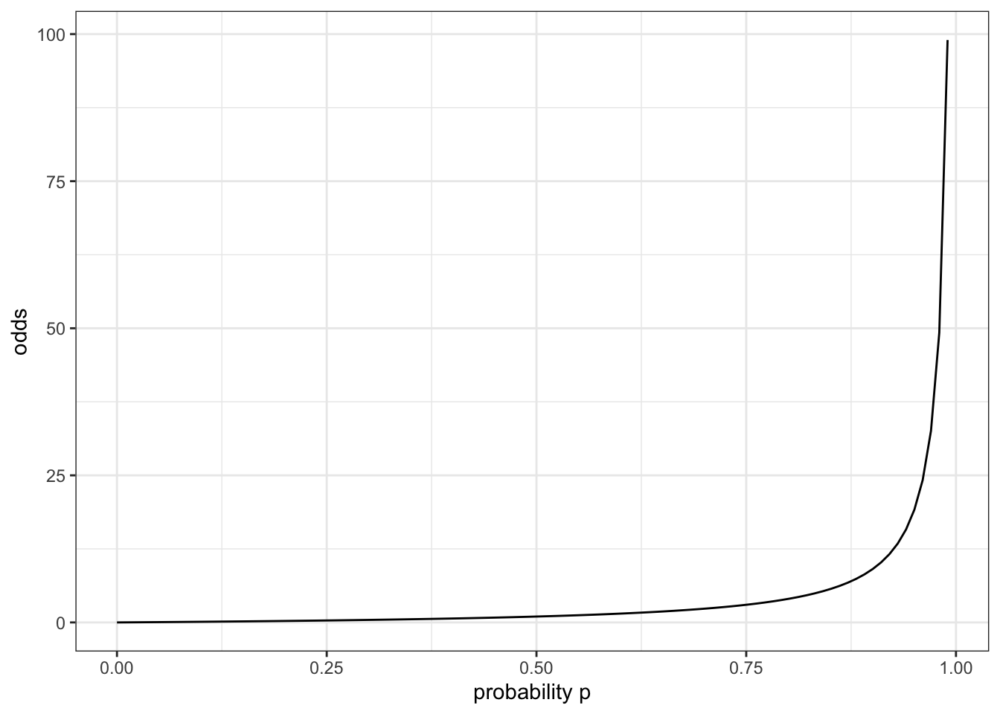
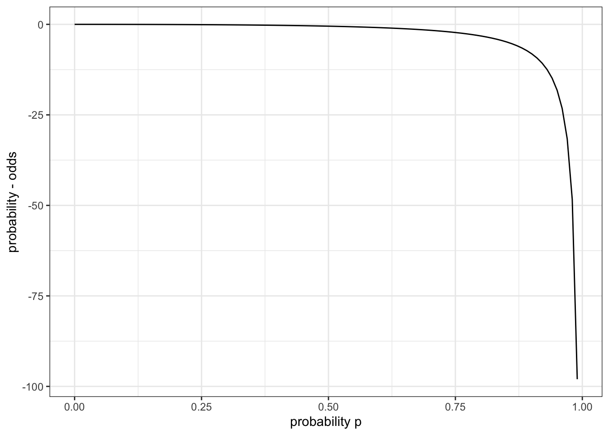
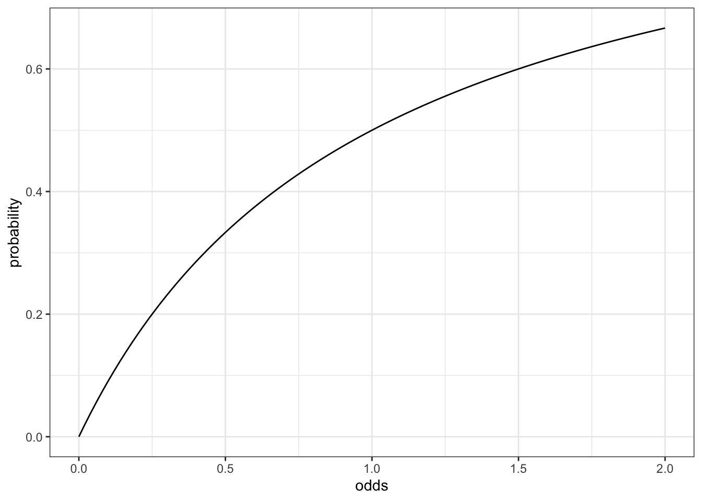
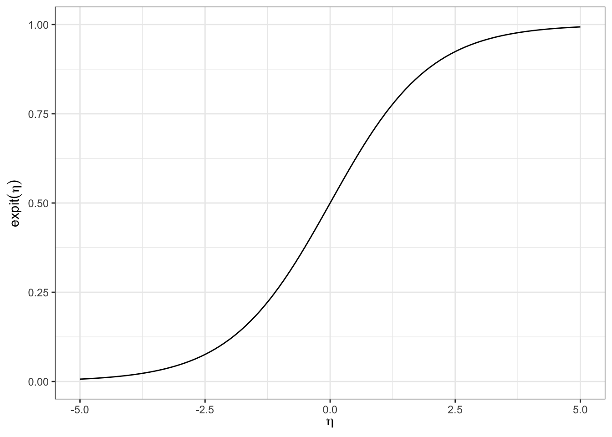
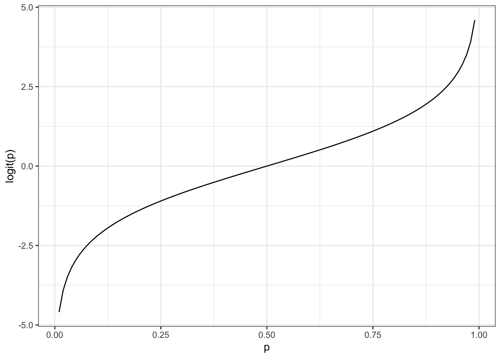

library(ggplot2)hw3
1 Modeling binary outcomes
1.1 Implement the odds function, odds function, odds (p) = \(\frac{p}{1-p}\), in R.
odds_func = function(pi)
{
pi / (1-pi)
}1.2 Graph odds(𝑝) from 𝑝 = 0 to 𝑝 = .99.
odds_plot = ggplot() + geom_function (fun = odds_func) + xlim(0, 0.99) +
theme_bw() + ylab("odds") + xlab ("probability p")
odds_plot
1.3 Which is larger, the odds of an event or the probability of that event? Why?
The odds of the event is greater than the probability of that event. We can prove it by math:
\[ p - \frac{p}{1-p} = \frac{p(1-p)}{1-p} - \frac{p}{1-p} = \frac{p-p^2-p}{1-p}\\ =-\frac{p^2}{1-p} \]
When p is between 0 to 0.99, both \(p^2\) and 1-p are positive, so \(\frac{p}{1-p}\) is always negative. We can also show this on a graph:
ovp_func = function(pi)
{
pi - pi / (1-pi)
}
ovp_plot = ggplot() + geom_function (fun = ovp_func) + xlim(0, 0.99) +
theme_bw() + ylab("probability - odds") + xlab ("probability p")
ovp_plot
1.4 Implement the inverse odds function
inverse_odds_func = function(omega)
{
omega / (1+omega)
}1.5 Graph the inverse odds function from odds = 0 to odds = 2.
in_odds_plot = ggplot() + geom_function (fun = inverse_odds_func) + xlim(0, 2) +
theme_bw() + ylab("probability") + xlab ("odds")
in_odds_plot
1.6 Implement the expit function in code.
expit = function(eta)
{
exp(eta)/(1+exp(eta))
}1.7 Graph the expit function from 𝑡 = −5 to 𝑡 = 5.
expit_plot =
ggplot() +
geom_function(fun = expit) +
xlim(-5, 5) +
ylim(0,1) +
ylab(expression(expit(eta))) +
xlab(expression(eta)) +
theme_bw()
print(expit_plot)
1.8 Use algebra to show that expit(0) = 0.5
\[ expit(0) = \frac{e^0}{(1+e^o)} = \frac{1}{(1+1)}=\frac{1}{2} = 0.5 \]
1.9 Invert the expit function
Use algebra to solve 𝑝 = expit(𝑡) for 𝑡 to find the inverse of the expit function, which we callthe logit function
\[ p=\frac{e^t}{1+e^t}\\ p(1+e^t)=e^t\\ p+p*e^t=e^t\\ p=e^t-p*e^t\\ p=e^t(1-p)\\ e^t=\frac{p}{1-p}\\ t=log(\frac{p}{1-p}) \]
1.10 Interpret the logit function
Complete this sentence:“For an outcome that occurs with probability 𝑝, logit(𝑝) is the log of the odds of that outcome occurring.”
1.11 Implement the logit function
logit = function(p) log(odds_func(p))1.12 Graph the logit function
logit_plot =
ggplot() +
geom_function(fun = logit) +
xlim(.01, .99) +
ylab("logit(p)") +
xlab("p") +
theme_bw()
print(logit_plot)
1.13 Use the logit function
If the probability of an event is 0.95, what is the log-odds of that event?
p <- 0.95
log_odds_val <- logit(p)
print(log_odds_val)[1] 2.9444391.14 Use the logit function again
What value of 𝑡 produces expit(𝑡) = .05?
p <- 0.05
log_odds_val2 <- logit(p)
print(log_odds_val2)[1] -2.9444392. Odds ratios
2.1
If \(\beta_1\) = \(\beta_2\), we can say that \(\omicron_1\) = \(\omicron_2\), therefore \(\theta\) is 1.
2.2
If \(\beta_1\) = 0, then \(\pi(x)\) = expit {\(\beta_0+\beta_1*x\)} = expit {\(\beta_0\)}.
\(\pi(a)\) = expit {\(\beta_0\)}, \(\pi(b)\) = expit {\(\beta_0\)}, therefore \(\pi(a)\)=\(\pi(b)\).
So for any a, b, the odds ratio is going to be 1.
3 WCGS study
load("wcgs.rda")3.2 Table 1
Produce a summary table summarizing and testing the univariate relationships between the outcome variable (chd69) and each covariate.
library(arsenal)
library(dplyr)
Attaching package: 'dplyr'The following objects are masked from 'package:stats':
filter, lagThe following objects are masked from 'package:base':
intersect, setdiff, setequal, unionwcgs |>
select(-c(id, uni, t1)) |>
tableby(chd69 ~ ., data = _) |>
summary(
pfootnote = TRUE,
title =
"Baseline characteristics by CHD status at end of follow-up")
Table: Baseline characteristics by CHD status at end of follow-up
| | No (N=2897) | Yes (N=257) | Total (N=3154) | p value|
|:---------------------------------------|:------------------:|:------------------:|:------------------:|----------:|
|**Age (years)** | | | | < 0.001^1^|
| Mean (SD) | 46.082 (5.457) | 48.490 (5.801) | 46.279 (5.524) | |
| Range | 39.000 - 59.000 | 39.000 - 59.000 | 39.000 - 59.000 | |
|**Arcus Senilis** | | | | < 0.001^2^|
| N-Miss | 0 | 2 | 2 | |
| FALSE | 2058 (71.0%) | 153 (60.0%) | 2211 (70.1%) | |
| TRUE | 839 (29.0%) | 102 (40.0%) | 941 (29.9%) | |
|**Behavioral Pattern** | | | | < 0.001^2^|
| A1 | 234 (8.1%) | 30 (11.7%) | 264 (8.4%) | |
| A2 | 1177 (40.6%) | 148 (57.6%) | 1325 (42.0%) | |
| B3 | 1155 (39.9%) | 61 (23.7%) | 1216 (38.6%) | |
| B4 | 331 (11.4%) | 18 (7.0%) | 349 (11.1%) | |
|**Body Mass Index (kg/m2)** | | | | < 0.001^1^|
| Mean (SD) | 24.471 (2.561) | 25.055 (2.579) | 24.518 (2.567) | |
| Range | 11.191 - 37.653 | 19.225 - 38.947 | 11.191 - 38.947 | |
|**Total Cholesterol** | | | | < 0.001^1^|
| N-Miss | 12 | 0 | 12 | |
| Mean (SD) | 224.261 (42.217) | 250.070 (49.396) | 226.372 (43.420) | |
| Range | 103.000 - 400.000 | 155.000 - 645.000 | 103.000 - 645.000 | |
|**Diastolic Blood Pressure** | | | | < 0.001^1^|
| Mean (SD) | 81.723 (9.621) | 85.315 (10.311) | 82.016 (9.727) | |
| Range | 58.000 - 150.000 | 64.000 - 122.000 | 58.000 - 150.000 | |
|**Behavioral Pattern** | | | | < 0.001^2^|
| Type A | 1411 (48.7%) | 178 (69.3%) | 1589 (50.4%) | |
| Type B | 1486 (51.3%) | 79 (30.7%) | 1565 (49.6%) | |
|**Height (inches)** | | | | 0.290^1^|
| Mean (SD) | 69.764 (2.539) | 69.938 (2.410) | 69.778 (2.529) | |
| Range | 60.000 - 78.000 | 63.000 - 77.000 | 60.000 - 78.000 | |
|**Ln of Systolic Blood Pressure** | | | | < 0.001^1^|
| Mean (SD) | 4.846 (0.110) | 4.900 (0.125) | 4.850 (0.112) | |
| Range | 4.585 - 5.438 | 4.605 - 5.298 | 4.585 - 5.438 | |
|**Ln of Weight** | | | | < 0.001^1^|
| Mean (SD) | 5.126 (0.123) | 5.155 (0.118) | 5.128 (0.123) | |
| Range | 4.357 - 5.670 | 4.868 - 5.768 | 4.357 - 5.768 | |
|**Cigarettes per day** | | | | < 0.001^1^|
| Mean (SD) | 11.151 (14.329) | 16.665 (15.657) | 11.601 (14.518) | |
| Range | 0.000 - 99.000 | 0.000 - 60.000 | 0.000 - 99.000 | |
|**Systolic Blood Pressure** | | | | < 0.001^1^|
| Mean (SD) | 128.034 (14.746) | 135.385 (17.473) | 128.633 (15.118) | |
| Range | 98.000 - 230.000 | 100.000 - 200.000 | 98.000 - 230.000 | |
|**Current smoking** | | | | < 0.001^2^|
| No | 1554 (53.6%) | 98 (38.1%) | 1652 (52.4%) | |
| Yes | 1343 (46.4%) | 159 (61.9%) | 1502 (47.6%) | |
|**Observation (follow up) time (days)** | | | | < 0.001^1^|
| Mean (SD) | 2775.158 (562.205) | 1654.700 (859.297) | 2683.859 (666.524) | |
| Range | 238.000 - 3430.000 | 18.000 - 3229.000 | 18.000 - 3430.000 | |
|**Type of CHD Event** | | | | |
| None | 0 (0.0%) | 0 (0.0%) | 0 (0.0%) | |
| infdeath | 0 (0.0%) | 0 (0.0%) | 0 (0.0%) | |
| silent | 0 (0.0%) | 0 (0.0%) | 0 (0.0%) | |
| angina | 2897 (100.0%) | 0 (0.0%) | 2897 (91.9%) | |
| 4 | 0 (0.0%) | 135 (52.5%) | 135 (4.3%) | |
| 5 | 0 (0.0%) | 71 (27.6%) | 71 (2.3%) | |
| 6 | 0 (0.0%) | 51 (19.8%) | 51 (1.6%) | |
|**Weight (lbs)** | | | | < 0.001^1^|
| Mean (SD) | 169.554 (21.010) | 174.463 (21.573) | 169.954 (21.096) | |
| Range | 78.000 - 290.000 | 130.000 - 320.000 | 78.000 - 320.000 | |
|**Weight Category** | | | | < 0.001^2^|
| < 140 | 217 (7.5%) | 15 (5.8%) | 232 (7.4%) | |
| 140-170 | 1440 (49.7%) | 98 (38.1%) | 1538 (48.8%) | |
| 170-200 | 1049 (36.2%) | 122 (47.5%) | 1171 (37.1%) | |
| > 200 | 191 (6.6%) | 22 (8.6%) | 213 (6.8%) | |
|**RECODE of age (Age)** | | | | < 0.001^2^|
| 35-40 | 512 (17.7%) | 31 (12.1%) | 543 (17.2%) | |
| 41-45 | 1036 (35.8%) | 55 (21.4%) | 1091 (34.6%) | |
| 46-50 | 680 (23.5%) | 70 (27.2%) | 750 (23.8%) | |
| 51-55 | 463 (16.0%) | 65 (25.3%) | 528 (16.7%) | |
| 56-60 | 206 (7.1%) | 36 (14.0%) | 242 (7.7%) | |
1. Linear Model ANOVA
2. Pearson's Chi-squared testmodel_age <- glm(chd69 ~ age, data = wcgs, family = binomial)
summary(model_age)
Call:
glm(formula = chd69 ~ age, family = binomial, data = wcgs)
Coefficients:
Estimate Std. Error z value Pr(>|z|)
(Intercept) -5.93952 0.54932 -10.813 < 2e-16 ***
age 0.07442 0.01130 6.585 4.56e-11 ***
---
Signif. codes: 0 '***' 0.001 '**' 0.01 '*' 0.05 '.' 0.1 ' ' 1
(Dispersion parameter for binomial family taken to be 1)
Null deviance: 1781.2 on 3153 degrees of freedom
Residual deviance: 1738.4 on 3152 degrees of freedom
AIC: 1742.4
Number of Fisher Scoring iterations: 5model_arcus <- glm(chd69 ~ arcus, data = wcgs, family = binomial)
summary(model_arcus)
Call:
glm(formula = chd69 ~ arcus, family = binomial, data = wcgs)
Coefficients:
Estimate Std. Error z value Pr(>|z|)
(Intercept) -2.5991 0.0838 -31.016 < 2e-16 ***
arcusTRUE 0.4918 0.1342 3.664 0.000248 ***
---
Signif. codes: 0 '***' 0.001 '**' 0.01 '*' 0.05 '.' 0.1 ' ' 1
(Dispersion parameter for binomial family taken to be 1)
Null deviance: 1771.2 on 3151 degrees of freedom
Residual deviance: 1758.2 on 3150 degrees of freedom
(2 observations deleted due to missingness)
AIC: 1762.2
Number of Fisher Scoring iterations: 5model_behpat <- glm(chd69 ~ behpat, data = wcgs, family = binomial)
summary(model_behpat)
Call:
glm(formula = chd69 ~ behpat, family = binomial, data = wcgs)
Coefficients:
Estimate Std. Error z value Pr(>|z|)
(Intercept) -2.05412 0.19392 -10.592 < 2e-16 ***
behpatA2 -0.01939 0.21263 -0.091 0.927349
behpatB3 -0.88686 0.23423 -3.786 0.000153 ***
behpatB4 -0.85762 0.31013 -2.765 0.005685 **
---
Signif. codes: 0 '***' 0.001 '**' 0.01 '*' 0.05 '.' 0.1 ' ' 1
(Dispersion parameter for binomial family taken to be 1)
Null deviance: 1781.2 on 3153 degrees of freedom
Residual deviance: 1740.3 on 3150 degrees of freedom
AIC: 1748.3
Number of Fisher Scoring iterations: 5model_bmi <- glm(chd69 ~ bmi, data = wcgs, family = binomial)
summary(model_bmi)
Call:
glm(formula = chd69 ~ bmi, family = binomial, data = wcgs)
Coefficients:
Estimate Std. Error z value Pr(>|z|)
(Intercept) -4.50869 0.60634 -7.436 1.04e-13 ***
bmi 0.08428 0.02412 3.495 0.000475 ***
---
Signif. codes: 0 '***' 0.001 '**' 0.01 '*' 0.05 '.' 0.1 ' ' 1
(Dispersion parameter for binomial family taken to be 1)
Null deviance: 1781.2 on 3153 degrees of freedom
Residual deviance: 1769.4 on 3152 degrees of freedom
AIC: 1773.4
Number of Fisher Scoring iterations: 5model_chol <- glm(chd69 ~ chol, data = wcgs, family = binomial)
summary(model_chol)
Call:
glm(formula = chd69 ~ chol, family = binomial, data = wcgs)
Coefficients:
Estimate Std. Error z value Pr(>|z|)
(Intercept) -5.359022 0.359468 -14.908 <2e-16 ***
chol 0.012448 0.001438 8.653 <2e-16 ***
---
Signif. codes: 0 '***' 0.001 '**' 0.01 '*' 0.05 '.' 0.1 ' ' 1
(Dispersion parameter for binomial family taken to be 1)
Null deviance: 1779.2 on 3141 degrees of freedom
Residual deviance: 1702.4 on 3140 degrees of freedom
(12 observations deleted due to missingness)
AIC: 1706.4
Number of Fisher Scoring iterations: 5model_dbp <- glm(chd69 ~ dbp, data = wcgs, family = binomial)
summary(model_dbp)
Call:
glm(formula = chd69 ~ dbp, family = binomial, data = wcgs)
Coefficients:
Estimate Std. Error z value Pr(>|z|)
(Intercept) -5.221713 0.511646 -10.206 < 2e-16 ***
dbp 0.033560 0.005981 5.611 2.01e-08 ***
---
Signif. codes: 0 '***' 0.001 '**' 0.01 '*' 0.05 '.' 0.1 ' ' 1
(Dispersion parameter for binomial family taken to be 1)
Null deviance: 1781.2 on 3153 degrees of freedom
Residual deviance: 1751.7 on 3152 degrees of freedom
AIC: 1755.7
Number of Fisher Scoring iterations: 5model_dibpat <- glm(chd69 ~ dibpat, data = wcgs, family = binomial)
summary(model_dibpat)
Call:
glm(formula = chd69 ~ dibpat, family = binomial, data = wcgs)
Coefficients:
Estimate Std. Error z value Pr(>|z|)
(Intercept) -2.07027 0.07954 -26.028 < 2e-16 ***
dibpatType B -0.86412 0.14020 -6.163 7.12e-10 ***
---
Signif. codes: 0 '***' 0.001 '**' 0.01 '*' 0.05 '.' 0.1 ' ' 1
(Dispersion parameter for binomial family taken to be 1)
Null deviance: 1781.2 on 3153 degrees of freedom
Residual deviance: 1740.3 on 3152 degrees of freedom
AIC: 1744.3
Number of Fisher Scoring iterations: 5model_height <- glm(chd69 ~ height, data = wcgs, family = binomial)
summary(model_height)
Call:
glm(formula = chd69 ~ height, family = binomial, data = wcgs)
Coefficients:
Estimate Std. Error z value Pr(>|z|)
(Intercept) -4.33732 1.81231 -2.393 0.0167 *
height 0.02742 0.02590 1.058 0.2899
---
Signif. codes: 0 '***' 0.001 '**' 0.01 '*' 0.05 '.' 0.1 ' ' 1
(Dispersion parameter for binomial family taken to be 1)
Null deviance: 1781.2 on 3153 degrees of freedom
Residual deviance: 1780.1 on 3152 degrees of freedom
AIC: 1784.1
Number of Fisher Scoring iterations: 5model_lnsbp <- glm(chd69 ~ lnsbp, data = wcgs, family = binomial)
summary(model_lnsbp)
Call:
glm(formula = chd69 ~ lnsbp, family = binomial, data = wcgs)
Coefficients:
Estimate Std. Error z value Pr(>|z|)
(Intercept) -21.1193 2.5779 -8.192 2.56e-16 ***
lnsbp 3.8379 0.5267 7.287 3.17e-13 ***
---
Signif. codes: 0 '***' 0.001 '**' 0.01 '*' 0.05 '.' 0.1 ' ' 1
(Dispersion parameter for binomial family taken to be 1)
Null deviance: 1781.2 on 3153 degrees of freedom
Residual deviance: 1730.6 on 3152 degrees of freedom
AIC: 1734.6
Number of Fisher Scoring iterations: 5model_lnwght <- glm(chd69 ~ lnwght, data = wcgs, family = binomial)
summary(model_lnwght)
Call:
glm(formula = chd69 ~ lnwght, family = binomial, data = wcgs)
Coefficients:
Estimate Std. Error z value Pr(>|z|)
(Intercept) -12.2808 2.7213 -4.513 6.4e-06 ***
lnwght 1.9180 0.5281 3.632 0.000281 ***
---
Signif. codes: 0 '***' 0.001 '**' 0.01 '*' 0.05 '.' 0.1 ' ' 1
(Dispersion parameter for binomial family taken to be 1)
Null deviance: 1781.2 on 3153 degrees of freedom
Residual deviance: 1768.1 on 3152 degrees of freedom
AIC: 1772.1
Number of Fisher Scoring iterations: 5model_ncigs <- glm(chd69 ~ ncigs, data = wcgs, family = binomial)
summary(model_ncigs)
Call:
glm(formula = chd69 ~ ncigs, family = binomial, data = wcgs)
Coefficients:
Estimate Std. Error z value Pr(>|z|)
(Intercept) -2.742160 0.092111 -29.770 < 2e-16 ***
ncigs 0.023220 0.004042 5.744 9.22e-09 ***
---
Signif. codes: 0 '***' 0.001 '**' 0.01 '*' 0.05 '.' 0.1 ' ' 1
(Dispersion parameter for binomial family taken to be 1)
Null deviance: 1781.2 on 3153 degrees of freedom
Residual deviance: 1750.0 on 3152 degrees of freedom
AIC: 1754
Number of Fisher Scoring iterations: 5model_sbp <- glm(chd69 ~ sbp, data = wcgs, family = binomial)
summary(model_sbp)
Call:
glm(formula = chd69 ~ sbp, family = binomial, data = wcgs)
Coefficients:
Estimate Std. Error z value Pr(>|z|)
(Intercept) -5.926461 0.497037 -11.924 < 2e-16 ***
sbp 0.026671 0.003671 7.265 3.73e-13 ***
---
Signif. codes: 0 '***' 0.001 '**' 0.01 '*' 0.05 '.' 0.1 ' ' 1
(Dispersion parameter for binomial family taken to be 1)
Null deviance: 1781.2 on 3153 degrees of freedom
Residual deviance: 1732.4 on 3152 degrees of freedom
AIC: 1736.4
Number of Fisher Scoring iterations: 5model_smoke <- glm(chd69 ~ smoke, data = wcgs, family = binomial)
summary(model_smoke)
Call:
glm(formula = chd69 ~ smoke, family = binomial, data = wcgs)
Coefficients:
Estimate Std. Error z value Pr(>|z|)
(Intercept) -2.7636 0.1042 -26.54 < 2e-16 ***
smokeYes 0.6299 0.1337 4.71 2.47e-06 ***
---
Signif. codes: 0 '***' 0.001 '**' 0.01 '*' 0.05 '.' 0.1 ' ' 1
(Dispersion parameter for binomial family taken to be 1)
Null deviance: 1781.2 on 3153 degrees of freedom
Residual deviance: 1758.4 on 3152 degrees of freedom
AIC: 1762.4
Number of Fisher Scoring iterations: 5model_weight <- glm(chd69 ~ weight, data = wcgs, family = binomial)
summary(model_weight)
Call:
glm(formula = chd69 ~ weight, family = binomial, data = wcgs)
Coefficients:
Estimate Std. Error z value Pr(>|z|)
(Intercept) -4.21471 0.51206 -8.231 < 2e-16 ***
weight 0.01042 0.00292 3.570 0.000356 ***
---
Signif. codes: 0 '***' 0.001 '**' 0.01 '*' 0.05 '.' 0.1 ' ' 1
(Dispersion parameter for binomial family taken to be 1)
Null deviance: 1781.2 on 3153 degrees of freedom
Residual deviance: 1768.9 on 3152 degrees of freedom
AIC: 1772.9
Number of Fisher Scoring iterations: 5model_wghtcat <- glm(chd69 ~ wghtcat, data = wcgs, family = binomial)
summary(model_wghtcat)
Call:
glm(formula = chd69 ~ wghtcat, family = binomial, data = wcgs)
Coefficients:
Estimate Std. Error z value Pr(>|z|)
(Intercept) -2.67185 0.26697 -10.008 <2e-16 ***
wghtcat140-170 -0.01558 0.28666 -0.054 0.9566
wghtcat170-200 0.52028 0.28359 1.835 0.0666 .
wghtcat> 200 0.51062 0.34923 1.462 0.1437
---
Signif. codes: 0 '***' 0.001 '**' 0.01 '*' 0.05 '.' 0.1 ' ' 1
(Dispersion parameter for binomial family taken to be 1)
Null deviance: 1781.2 on 3153 degrees of freedom
Residual deviance: 1764.6 on 3150 degrees of freedom
AIC: 1772.6
Number of Fisher Scoring iterations: 5model_agec <- glm(chd69 ~ agec, data = wcgs, family = binomial)
summary(model_agec)
Call:
glm(formula = chd69 ~ agec, family = binomial, data = wcgs)
Coefficients:
Estimate Std. Error z value Pr(>|z|)
(Intercept) -2.8043 0.1850 -15.162 < 2e-16 ***
agec41-45 -0.1315 0.2310 -0.569 0.569298
agec46-50 0.5307 0.2235 2.374 0.017580 *
agec51-55 0.8410 0.2275 3.697 0.000218 ***
agec56-60 1.0600 0.2585 4.100 4.13e-05 ***
---
Signif. codes: 0 '***' 0.001 '**' 0.01 '*' 0.05 '.' 0.1 ' ' 1
(Dispersion parameter for binomial family taken to be 1)
Null deviance: 1781.2 on 3153 degrees of freedom
Residual deviance: 1736.3 on 3149 degrees of freedom
AIC: 1746.3
Number of Fisher Scoring iterations: 5chd_model1 = glm(
"formula" = chd69 == "Yes" ~ dibpat*age,
"data" = wcgs,
"family" = binomial(link = "logit")
)
library(parameters)
chd_model1 |> parameters() |> print_md()| Parameter | Log-Odds | SE | 95% CI | z | p |
|---|---|---|---|---|---|
| (Intercept) | -5.50 | 0.67 | (-6.83, -4.19) | -8.18 | < .001 |
| dibpat (Type B) | -0.30 | 1.18 | (-2.63, 2.02) | -0.26 | 0.797 |
| age | 0.07 | 0.01 | (0.05, 0.10) | 5.24 | < .001 |
| dibpat (Type B) × age | -0.01 | 0.02 | (-0.06, 0.04) | -0.42 | 0.674 |
vcov(chd_model1) |> pander::pander()| (Intercept) | dibpatType B | age | dibpatType B:age | |
|---|---|---|---|---|
| (Intercept) | 0.4516 | -0.4516 | -0.00916 | 0.00916 |
| dibpatType B | -0.4516 | 1.404 | 0.00916 | -0.02894 |
| age | -0.00916 | 0.00916 | 0.0001885 | -0.0001885 |
| dibpatType B:age | 0.00916 | -0.02894 | -0.0001885 | 0.0006055 |
3.3 Write down the mathematical structure of the model
\[ logit(E(y|x)) =X'\beta = \beta_0 + \beta_{age}X_{age}+\beta_{typeB}X_{typeb}+\beta_{age*typeb}(X_{age}*X_{typeB})\\ =-5.49886 + 0.07191*X_{age}-0.30439*X_{typeb}-0.01034(X_{age}*X_{typeB})\\ \]3.4 From the model outputs above, compute by hand the estimated probability of CHD for a 45-year old with a Type A personality.
\[ logit(E(y =1|X_{age}=45, X_{typeB}=TypeA)) =X'\beta=-5.49886 + 0.07191*45-0.30439*0-0.01034(0)=-2.26291\\ log(odds(\pi))=-2.26291\\ odds(\pi)=e^{2.26291}\\ odds(\pi)=0.104047\\ \pi=\frac{\omega}{1+\omega}=\frac{0.104047}{1+0.104047}=0.09424 \]
3.5 Confirm your results using the predict() function using the new data argument.
library(tidyverse)── Attaching core tidyverse packages ──────────────────────── tidyverse 2.0.0 ──
✔ forcats 1.0.0 ✔ stringr 1.5.0
✔ lubridate 1.9.3 ✔ tibble 3.2.1
✔ purrr 1.0.2 ✔ tidyr 1.3.1
✔ readr 2.1.4
── Conflicts ────────────────────────────────────────── tidyverse_conflicts() ──
✖ dplyr::filter() masks stats::filter()
✖ lubridate::is.Date() masks arsenal::is.Date()
✖ dplyr::lag() masks stats::lag()
ℹ Use the conflicted package (<http://conflicted.r-lib.org/>) to force all conflicts to become errorsnewdata <- data.frame(age = 45, dibpat = "Type A")
probabilities <- predict(chd_model1, newdata = newdata, type = "response")
print(probabilities) 1
0.09423056 3.6 Compute the standard error of the log-odds of CHD for a 45-year-old with Type A personality.
SE_logodds <- predict(chd_model1, newdata = newdata, se.fit=T)
print(SE_logodds)$fit
1
-2.26304
$se.fit
[1] 0.09425268
$residual.scale
[1] 13.7 Compute a confidence interval for the estimated probability of CHD for a 45-year-old with Type A personality
SE_prob <- predict(chd_model1, newdata = newdata, type = "response", se.fit=T)
print(SE_prob)$fit
1
0.09423056
$se.fit
1
0.008044576
$residual.scale
[1] 1conf_int_prob <-c(probabilities - qnorm(0.975)*0.008044576, probabilities + qnorm(0.975)*0.008044576)
print(conf_int_prob) 1 1
0.07846348 0.10999764 3.8 Compute the probability of CHD for a 45-year-old with a Type B personality,either by hand or using predict().
newdataB <- data.frame(age = 45, dibpat = "Type B")
probabilityB <- predict(chd_model1, newdata = newdataB, type = "response")
print(probabilityB) 1
0.04596144 3.9 Compute the risk difference, risk ratio, and odds ratio comparing the two individuals described in the previous sections.
\[ Risk~difference = Pr(Y=1|, X_{age} = 45,~X_{TypeB} = 0) - Pr(Y=1|, X_{age} = 45,~X_{TypeB} = 1)\\ =0.09423056-0.04596144=0.04826912 \]
\[ Risk~ratio = Pr(Y=1|, X_{age} = 45,~X_{TypeB} = 0) / Pr(Y=1|, X_{age} = 45,~X_{TypeB} = 1)\\ =0.09423056/0.04596144=2.050209 \]
\[ Odds(Y=1|, X_{age} = 45,~X_{TypeB} = 0) = \frac{0.09423056}{1-0.09423056} =0.1040337 \\ Odds(Y=1|, X_{age} = 45,~X_{TypeB} = 1) = \frac{0.04596144}{1-0.04596144} =0.04817566 \\ odds~ratio = \frac{odds(Y=1|, X_{age} = 45,~X_{TypeB} = 0)}{odds(Y=1|, X_{age} = 45,~X_{TypeB} = 1)}\\ =0.1040337/0.04817566=2.159466 \]
3.10 Recompute the odds ratio from the previous section; this time, write downthe odds for each individual in terms of the 𝛽s, and then construct the ratio of these expressions and cancel terms to simplify the expression as much aspossible.
\[ odds(Y=1|, X_{age} = 45,~X_{TypeB} = 0) =e^{\beta_0+\beta_{age}*45+\beta_{TypeB}*0+\beta_{age*TypeB}*45*0}\\ odds(Y=1|, X_{age} = 45,~X_{TypeB} = 1) =e^{\beta_0+\beta_{age}*45+\beta_{TypeB}*1+\beta_{age*TypeB}*45*1}\\ odds~ratio:\frac{e^{\beta_0+\beta_{age}*45+\beta_{TypeB}*0+\beta_{age*TypeB}*45*0}}{e^{\beta_0+\beta_{age}*45+\beta_{TypeB}*1+\beta_{age*TypeB}*45*1}}\\ =e^{-(\beta_{TypeB}+\beta_{age*TypeB}*45)} \]
3.11 Plug in the numerical estimates of the remaining 𝛽 or 𝛽s into the expression from the previous section. Does the result match the answer yougot from brute-force calculation two subsections ago?
\[ e^{(0.30439+0.01034*45)}= 2.159097 \]
Yes.
3.12 Using the approach from the subsection before last, determine the general formula for odds ratios comparing individuals with different ages who both have Type A personalities.
\[ odds(Y=1| X_{age} = a,~X_{TypeB} = 0) =e^{\beta_0+\beta_{age}*a+\beta_{TypeB}*0+\beta_{age*TypeB}*a*0}\\ odds(Y=1| X_{age} = b,~X_{TypeB} = 0) =e^{\beta_0+\beta_{age}*b+\beta_{TypeB}*0+\beta_{age*TypeB}*b*0}\\ odds~ratio:\frac{e^{\beta_0+\beta_{age}*a+\beta_{TypeB}*0+\beta_{age*TypeB}*a*0}}{e^{\beta_0+\beta_{age}*b+\beta_{TypeB}*0+\beta_{age*TypeB}*b*0}}\\ =\frac{e^{\beta_0+\beta_{age}*a}}{e^{\beta_0+\beta_{age}*b}}\\ =e^{\beta_{age}*(a-b)}\\ =e^{0.07191(a-b)} \]
3.13 Compute the odds ratio comparing a Type A 45-year-old with a Type A 47.25-year-old, using the shortcut from the previous section.
\[ e^{\beta_{age}*(a-b)} = e^{0.07191*(45-47.25)}=0.8506134 \]
3.14 Compute a confidence interval for that odds ratio.
log_odds_ratio <- log(0.8506134)
print(log_odds_ratio)[1] -0.1617975vcov(chd_model1) (Intercept) dibpatType B age dibpatType B:age
(Intercept) 0.451581308 -0.451581308 -0.0091596428 0.0091596428
dibpatType B -0.451581308 1.403571131 0.0091596428 -0.0289432354
age -0.009159643 0.009159643 0.0001884791 -0.0001884791
dibpatType B:age 0.009159643 -0.028943235 -0.0001884791 0.0006054832SE_log_odds_ratio <-sqrt(0.0001884791*(-2.25)^2)
print(SE_log_odds_ratio)[1] 0.03088973conf_int_log_odds_ratio <-log_odds_ratio + c(-1, 1)*qnorm(0.975)*SE_log_odds_ratio
print(conf_int_log_odds_ratio)[1] -0.2223403 -0.1012548conf_int_odds_ratio <- exp(conf_int_log_odds_ratio)
print(conf_int_odds_ratio)[1] 0.8006429 0.90370283.15 Find the formula for the odds ratio comparing individuals of different ages who both have Type B personalities.
\[ odds(Y=1|, X_{age} = a,~X_{TypeB} = 1) =e^{\beta_0+\beta_{age}*a+\beta_{TypeB}*1+\beta_{age*TypeB}*a*1}\\ odds(Y=1|, X_{age} = b,~X_{TypeB} = 1) =e^{\beta_0+\beta_{age}*b+\beta_{TypeB}*1+\beta_{age*TypeB}*b*1}\\ odds~ratio:\frac{e^{\beta_0+\beta_{age}*a+\beta_{TypeB}*1+\beta_{age*TypeB}*a*1}}{e^{\beta_0+\beta_{age}*b+\beta_{TypeB}*1+\beta_{age*TypeB}*b*1}}\\ =\frac{e^{\beta_{age}*a+\beta_{age*TypeB}*a}}{e^{\beta_{age}*b+\beta_{age*TypeB}*b}}\\ =e^{\beta_{age}*(a-b)+\beta_{age*TypeB}*(a-b)}\\ =e^{(a-b)*(\beta_{age}+\beta_{age*TypeB})}\\ =e^{(a-b)(0.07191-0.01034)}\\ =e^{(a-b)*0.06157}\\ \]
3.16 Compute the odds ratio comparing a Type A 47.25 year old with a Type B 47.25 year old.
\[ odds(Y=1|, X_{age} = 47.25,~X_{TypeB} = 0) = e^{\beta_0+\beta_{age}*47.25+\beta_{TypeB}*0+\beta_{age*TypeB}*47.25*0}\\ odds(Y=1|, X_{age} = 47.25,~X_{TypeB} = 1) = e^{\beta_0+\beta_{age}*47.25+\beta_{TypeB}*1+\beta_{age*TypeB}*47.25*1}\\ odds~ratio:\frac{e^{\beta_0+\beta_{age}*47.25+\beta_{TypeB}*0+\beta_{age*TypeB}*47.25*0}}{e^{\beta_0+\beta_{age}*47.25+\beta_{TypeB}*1+\beta_{age*TypeB}*47.25*1}}\\ =\frac{e^{\beta_0+\beta_{age}*47.25}}{e^{\beta_0+\beta_{age}*47.25+\beta_{TypeB}+\beta_{age*TypeB}*47.25}}\\ =e^{-\beta_{TypeB}-\beta_{age*TypeB}*47.25}\\ =e^{0.30439+0.01034*47.25}\\ =2.209917 \]
3.17 Compute the odds ratio comparing a Type A 45 year old with a Type B 47.25 year old, by first computing the odds for each individual and then taking the ratio of those odds.
newdataC <- data.frame(age = 47.25, dibpat = "Type B")
probabilityC <- predict(chd_model1, newdata = newdataC, type = "response")
print(probabilityC) 1
0.05243189 \[ Odds(Y=1| X_{age} = 45,~X_{TypeB} = 0) = \frac{0.09423056}{1-0.09423056} =0.1040337 \\ Odds(Y=1| X_{age} = 47.25,~X_{TypeB} = 1) = \frac{0.05243189}{1-0.05243189} = 0.05533311\\ odds~ratio = \frac{odds(Y=1| X_{age} = 45,~X_{TypeB} = 0)}{odds(Y=1| X_{age} = 47.25,~X_{TypeB} = 1)}\\ =0.1040337/0.05533311=1.880135 \]
3.18 Recompute the odds ratio from the previous subsection by multiplying the odds ratio for Type A 45-y.o. vs Type A 47.25-y.o. (from a few subsections ago) times the odds ratio for Type A 47.25 year old vs Type B 47.25 year old.
\[ 0.8506134 * 2.209917 = 1.879785 \]
3.19 Compute the odds ratio comparing 49.15-year-old Type B versus 42.22-year-old type A, using the same shortcuts you used above.
\[ odds~ratio = \frac{odds(Y=1|, X_{age} = 49.15,~X_{TypeB} = 1)}{odds(Y=1|, X_{age} = 42.22,~X_{TypeB} = 0)}\\ =\frac{odds(Y=1|, X_{age} = 49.15,~X_{TypeB} = 1)}{odds(Y=1|, X_{age} = 42.22,~X_{TypeB} = 1)}*\frac{odds(Y=1|, X_{age} = 42.22,~X_{TypeB} = 1)}{odds(Y=1|, X_{age} = 42.22,~X_{TypeB} = 0)}\\ \frac{odds(Y=1|, X_{age} = 49.15,~X_{TypeB} = 1)}{odds(Y=1|, X_{age} = 42.22,~X_{TypeB} = 1)}=e^{(49.15-42.22)*0.06157}=e^{0.4266801}=1.532162\\ \frac{odds(Y=1|, X_{age} = 42.22,~X_{TypeB} = 1)}{odds(Y=1|, X_{age} = 42.22,~X_{TypeB} = 0)}=\frac{e^{\beta_0+\beta_{age}*42.22+\beta_{TypeB}*1+\beta_{age*TypeB}*42.22*1}}{e^{\beta_0+\beta_{age}*42.22+\beta_{TypeB}*0+\beta_{age*TypeB}*42.22*0}}\\ =\frac{e^{\beta_0+\beta_{age}*42.22+\beta_{TypeB}+\beta_{age*TypeB}*42.22}}{e^{\beta_0+\beta_{age}*42.22}}\\ =e^{\beta_{TypeB}+\beta_{age*TypeB}*42.22}=e^{-0.30439-0.01034*42.22}=0.4766634\\ odds~ratio=1.532162*0.4766634=0.7303255 \]
3.20 Compute a confidence interval for the odds ratio comparing 49.15-year-old Type B versus 42.22-year-old type A. (extra credit)
log_odds_ratio20 <- log(0.7303255)
SE_log_odds_ratio20 <-sqrt(1.403571131+42.22^2*(0.0006054832)+2*42.22*(-0.0289432354))
print(SE_log_odds_ratio20)[1] 0.197219conf_int_log_odds_ratio20 <-log_odds_ratio20 + c(-1, 1)*qnorm(0.975)*SE_log_odds_ratio20
print(conf_int_log_odds_ratio20)[1] -0.70080709 0.07227718conf_int_odds_ratio20 <- exp(conf_int_log_odds_ratio20)
print(conf_int_odds_ratio20)[1] 0.4961847 1.0749533